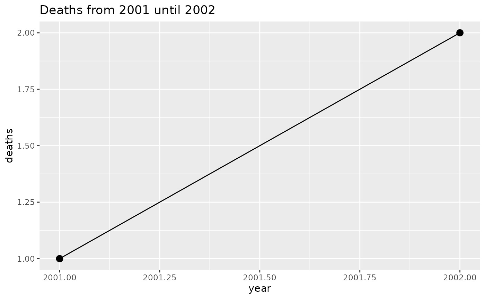

plnr runs many analyses on the same data. You describe the data and the analyses in a plan, and the plan runs them.
Core concepts
| Term | Meaning |
|---|---|
| argset | A named list of arguments for one analysis. |
| action function | A function that does one analysis. It MUST take the data as its first argument and the argset as its second. It MAY take more arguments. |
| analysis | One argset plus one action function. A plan runs analyses. |
| plan | A Plan object. It holds the data sources and a list of
analyses. |
A plan is one of two kinds:
- A single-function plan applies one action function to many argsets. Use it for many strata, such as locations or age groups, or for many variables, such as exposures or outcomes.
- A multi-function plan applies different action functions to the same data. Use it for the tables and figures of one report.
vignette("adding_analyses") builds both kinds on real
data.
A first plan
## plnr 2026.9.24
## https://www.rwhite.no/plnr/##
## Attaching package: 'data.table'## The following object is masked from 'package:base':
##
## %notin%
p <- Plan$new()
p$add_data(
name = "deaths",
direct = data.table(deaths = 1:4, year = 2001:2004)
)
p$add_argset(name = "fig_1_2002", year_max = 2002)
p$add_argset(name = "fig_1_2003", year_max = 2003)
fn_fig_1 <- function(data, argset) {
plot_data <- data$deaths[year <= argset$year_max]
ggplot(plot_data, aes(x = year, y = deaths)) +
geom_line() +
geom_point(size = 3) +
labs(title = glue::glue("Deaths from 2001 until {argset$year_max}"))
}
p$apply_action_fn_to_all_argsets(fn_name = "fn_fig_1")
p$run_one("fig_1_2002")
run_one() runs one analysis. run_all() runs
every analysis and returns a list of the results.
Data
add_data() takes a data source in one of three
forms:
-
direct: the dataset itself. -
fn: a function with no arguments that returns the dataset. -
fn_name: the name of such a function.
run_all() calls get_data() once and passes
the result to every analysis. run_one() calls
get_data() each time you call it. get_data()
also adds an element hash, with a spookyhash digest of each
dataset. plnr does not read these digests. It does not cache, so every
call of get_data() loads every data source again.
Function names
An analysis gets its action function by name or as a function object:
p$add_analysis(name = "fig_1_2002", fn_name = "fn_fig_1", year_max = 2002)
p$add_analysis(name = "fig_1_2003", fn = fn_fig_1, year_max = 2003)plnr finds the function when the analysis runs. It looks in this order:
- The local environment where the name resolved when you added the
analysis. This applies inside a function, or in a report knit with
envir = new.env(). There, the function MUST exist before you add the analysis. - The global environment, then the search path. A global function MAY come after the analysis.
- plnr itself.
"pkg::fn" names a function that a package exports.
?get_anything gives the full order.
A function object suits a function that another function made. The
two forms pass arguments differently, as ?Plan
describes.
Debugging
These methods show what an action function gets:
p$get_argset("fig_1_2002")## $year_max
## [1] 2002
p$get_analysis(1)## $fn
## NULL
##
## $fn_name
## [1] "fn_fig_1"
##
## $fn_env
## NULL
##
## $argset
## $argset$year_max
## [1] 2002
##
## $argset$index_analysis
## [1] 1
str(p$get_data(), max.level = 1)## List of 2
## $ deaths:Classes 'data.table' and 'data.frame': 4 obs. of 2 variables:
## ..- attr(*, ".internal.selfref")=<pointer: 0x564f98525f20>
## $ hash :List of 2To develop an action function line by line, start it with
is_run_directly():
fn_analysis <- function(data, argset) {
if (plnr::is_run_directly()) {
data <- p$get_data()
argset <- p$get_argset("fig_1_2002")
}
data$deaths[year <= argset$year_max]
}When you run the lines of the body in the console,
is_run_directly() returns TRUE, so
data and argset come from the plan. When the
plan runs the function, it returns FALSE, and the two lines
do nothing.